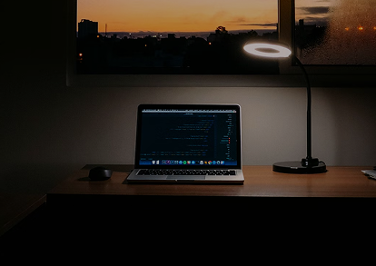

Hi there! My name is Emmanuel and welcome to my learning journal.
After several months of learning in the Frontend Developer Career path, i`ve made the big jump over to the pathway to get expert code reviews of my Learning Journey and solo project and meet like-minded peers.

How i stay committed to learning
I like to think of myself as a lifelong learner. i used to spend hours and hours learning, then try to create simple projects using what i learned or work new techniques into existing project
While that was fun, i felt like it would be helpful to share what i was learning and most things about my journey with the world
How i got started
I happened to meet a wonderful experienced software engineer Mr Alegre, a very encouraging and supportive mentor, who happened to guide and encourage me whenever i face challenges he was one of the pioneers that supported by journey. I started simple and gradually grew my learning journal site. and other of my simple project. i would take notes about what my mentor was always teaching me, to aid my learning After each learning session. i`d use my notes to not only reflect on what i learned but also write short summaries of what i learned using my own words and also try building some project based on what i learned
That helped me grow what i was learning, and i realized that my posting my learning summarries and project was also helping other learn and stay motivated.